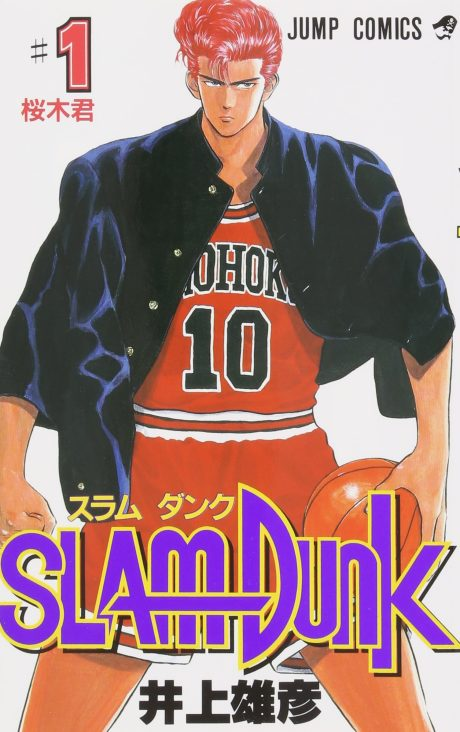

Slam Dunk
SLAM DUNK
Hanamichi, a delinquent rejected by 50 girls, joins the basketball team to impress a girl.
After the anime, read the manga from Chapter 198.
8.3AniList score
—Animeter, no votes yet
101episodes
Rate it or report where you stopped
Anime finished. Where does the manga pick up?
Start at Chapter198
The TV anime stops after the Ryonan game. The First Slam Dunk film covers only the final Sannoh match, so read from Chapter 198 for everything in between.
1197276 end
TV seriesStart reading here
Sources: Anime Filler Guide, Wikipedia